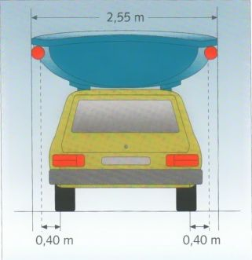
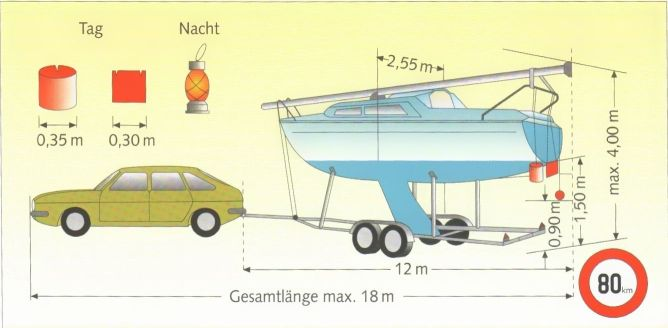
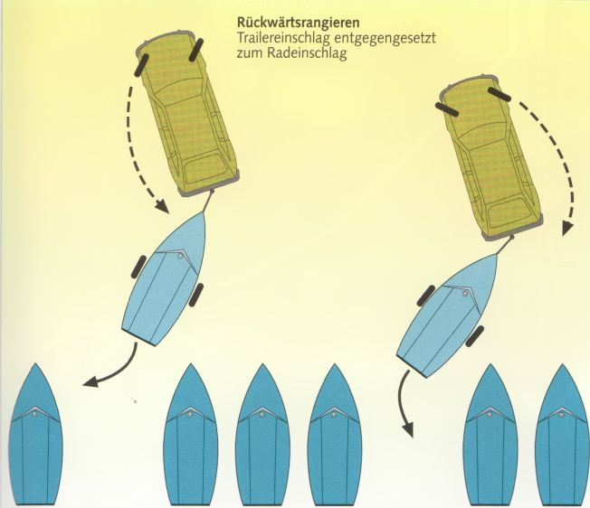

Правила перевозки на крыше
Максимальная высота 4,00 м.
Максимальная ширина 2,55 м.
Если лодка выступает более чем на 0,40 м за наружный край фар, ночью она должна быть обозначена габаритными огнями - белым спереди и красным сзади.
Лодка или мачта не должны выступать вперёд за пределы автомобиля.
Назад - до 1,50 м; при перевозке в пределах 100 км - до 3,00 м.
Обозначение днём и ночью - как при перевозке на прицепе.
Самый простой способ перевезти лодку по суше - на крыше автомобиля. Однако допустимая нагрузка на крышу существенно ограничивает размер и вес лодки. У большинства марок автомобилей она составляет около 60 кг. Ограничения скорости для перевозки на крыше не существует. Но поездка с таким грузом на крыше в любом случае не доставляет особого удовольствия. Сопротивление воздуха значительно возрастает.
Даже разгон до оставшейся максимальной скорости может оказаться рискованным делом, поскольку лодка на крыше обычно создаёт заметную подъёмную силу. При перевозке килем вниз она сильнее - поскольку лодка при этом находится в воздушном потоке в своём естественном «плавучем» положении, - чем при перевозке килем вверх. Особенно неприятен сильный боковой ветер. Проезд под мостами и путепроводами из-за возникающего там эффекта всасывания требует осторожности.
Видео: Boat trailering and launching explained (EN)

Правила перевозки на прицепе
Максимальная скорость 80 км/ч.
При определённых условиях - 100 км/ч.
Максимальная общая длина автопоезда 18 м, прицепа - 12 м.
Максимальная высота 4,00 м.
Максимальная ширина 2,55 м.
Общая масса необорудованного тормозами прицепа не должна превышать 750 кг.
В остальном действует правило: общая масса прицепа и лодки = ¾ снаряжённой массы автомобиля + 75 кг.
Назад лодка и оснастка могут выступать на 1,50 м, при перевозке в пределах 100 км
до 3,00 м за задние габаритные огни.
Обозначение днём:
щиток ярко-красного цвета размером 0,30 x 0,30 м, либо флаг такого же размера в растянутом виде, либо ярко-красное цилиндрическое тело высотой 0,30 м и диаметром 0,35 м.
Не выше 1,00 м над проезжей частью. В тёмное время суток: красный огонь не выше 1,50 м над проезжей частью и красный катафот не выше 0,90 м над проезжей частью.
Для лодок тяжелее примерно 70 кг требуется прицеп, называемый трейлером (Trailer).
Трейлеры получают собственный государственный регистрационный номер и должны регулярно проходить техосмотр (TÜV или DEKRA). Трейлер должен иметь стоп-сигналы, задние габаритные и указатели поворота, катафоты, подсветку номерного знака и заводскую табличку изготовителя.
Существуют трейлеры с тормозами и небольшие - без тормозов. Одноосные обычно не оборудованы тормозами. Двухосные должны иметь собственную тормозную систему с обрывным тросом. Он приводит в действие ручной тормоз трейлера, если тот отсоединяется от тягача во время движения.
Допустимая масса прицепа: устанавливается автозаводом и составляет от 300 до 1600 кг. Для тяжёлых автомобилей существуют исключительные разрешения до 2 т.
Масса прицепа складывается из полезной нагрузки (веса лодки) и веса самого трейлера. Величину полезной нагрузки указывают производители трейлеров. При весе лодки около 1,5 т возможность её перевозки на трейлере заканчивается.
Нагрузка на сцепное устройство должна составлять не более примерно 10% от массы прицепа.
Если груз смещён на нос или на корму, может возникнуть неприятное раскачивание, и управляемость тягача станет ненадёжной.
Торможение нужно начинать заблаговременно и плавно. Тормозной путь автопоезда может быть вдвое больше обычного тормозного пути автомобиля без прицепа. При резком торможении с необорудованным тормозами трейлером может случиться, что трейлер развернётся поперёк и потянет корму автомобиля в сторону.

Манёвры задним ходом с автопоездом и трейлером
Манёвры задним ходом с трейлером требуют иного образа мышления. Если у него набегающий тормоз (Auflaufbremse), его нужно предварительно заблокировать. Затем руль поворачивают в направлении, противоположном тому, куда должен пойти прицеп. Если нужно, чтобы трейлер пошёл
влево, руль поворачивают вправо, то есть передние колёса поворачивают вправо.
Корма автомобиля поворачивает вправо, трейлер уходит влево. Или наоборот.
Швертботы (Jolle), небольшие килевые швертботы, а также суда с двойным или подъёмным килем можно спускать на слипе. Это означает - спускать на воду прямо с трейлера по слиповой рампе или же с твёрдого берега, а потом тем же способом вытаскивать обратно. Роликовые полозья и, возможно, откидное устройство на раме трейлера облегчают эту работу. Для лодок побольше на трейлере необходима лебёдка. Одновременно она служит и для фиксации лодки при транспортировке.
Перед погружением трейлера в воду обязательно отсоединить электропроводку. Она не является водонепроницаемой. Полностью водонепроницаемой ступицы колеса также не существует. От воды помогает только тщательная смазка.
После купания в солёной воде трейлер следует ополоснуть пресной водой, чтобы предотвратить преждевременную коррозию.
Тормозная магистраль оборудованных тормозами трейлеров также иногда оказывается чувствительной к солёной воде и начинает подклинивать. Обычно помогает короткое движение задним ходом, чтобы снять блокировку. Но поскольку при следующем торможении это может повториться, следует сразу же обратиться в мастерскую.